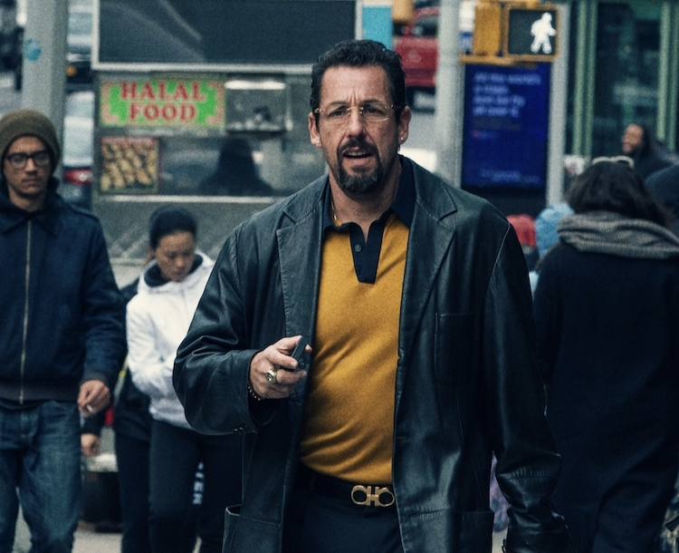

“Uncut Gems” non è un film: è un’esperienza. Un flusso continuo di ansia, rumore e tensione che non ti lascia mai respirare davvero. I fratelli Safdie costruiscono un racconto frenetico, quasi soffocante, che riflette perfettamente il caos interiore del protagonista.
Howard Ratner è un gioielliere newyorkese dipendente dal rischio, incapace di fermarsi, sempre un passo oltre il limite. Ogni scelta lo spinge più a fondo in una spirale autodistruttiva, in cui speranza e rovina convivono costantemente.
Adam Sandler offre probabilmente la miglior performance della sua carriera: nervosa, autentica, mai caricaturale. È impossibile staccarsi da lui, anche quando diventa insopportabile.
Il film gioca tutto sul ritmo: dialoghi sovrapposti, suoni invadenti, montaggio serrato. Non c’è tregua, e proprio per questo funziona.
Un’opera che divide, ma che lascia il segno. Non per tutti, ma impossibile da ignorare.
— Patrizia Catania · paneacult
← Torna alla home